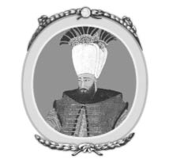

XIV : PASAROFÇA ANTLAŞMASI
1702-1718

Köprülü ailesinden çıkan dördüncü Veziriazam Hüseyin’in ölümünden sonra, Mustafa da sultan olarak fazla zaman geçiremedi. Hükümdarlığın beklentilerini karşılayamadı ve Dîvânın karşı çıkmasına rağmen savaş meydanında ordunun başına geçti. Yaptığı hatalarla hayal kırıklığına uğradı ve hevesi kırıldı, geri kalan hayatını ayyaş ve miskin olarak idame ettirdi. Hüseyin Köprülü’nün ölümünden sonra bütün imparatorluğu bir huzursuzluk aldı ve birçok bölgesinde isyan çıkma tehlikesi oluştu. Mustafa’nın bununla başa çıkacak cesareti yoktu. Tahtan çekildi ve kendi isteği ile hapse kapatıldı. Onun yerine otuz yaşındaki kardeşi III. Ahmed geçti. Yeniçerilerin kışkırtmalarıyla yirmi yedi yıl sonra tahtan indirildi.
III. Ahmed amcasının genellikle diğer aile üyelerine yaptığı zorunlu inzivayı yaşamadı. Hayatı son derece iyi bilerek tecrübeleriyle birlikte tahta çıktı. O bir savaşçı değildi ve savaş meydanında ordusunun başına geçmedi. Ancak devlet işlerini haremindeki kadınlara da bırakmadı. Hırslı vezirlerin de gücü tek ellerine almalarına izin vermedi. Zaten onları sürekli değiştirdi ve buna imkân tanımadı. Hükümdarlığının ilk on beş yılında tam on iki veziri vardı. Bu değişimlerin sebebi olarak da vezirlerin ya para istemesi ya da haremde çıkan taşkınlıklar olarak gösterildi. Veziriazamların atamaları yapılırken sultana belli bir para verilmesi gelenekti ve Ahmed bu olaya gelir kaynağı olarak bakıyordu. Ancak kısa görev süreleri boyunca Ahmed işlerine fazla karışmadı. Barış politikası güdüyordu, vezirlerini de bu konuda destekliyordu. Hükümdarlığının ilk altı yılı ve son on iki yılı boyunca imparatorlukta güçlü bir barış söz konusuydu. Bunun yanında diğer dokuz yıl boyunca imparatorluk topraklarının genişleme ve azalma konusunda ciddi olaylar baş gösterdi. Eskiden Osmanlı hükümdarlığı altında olan bölgeler tekrardan fethedildi ve uzun zamandır ellerinde olan yerler ise kaybedildi. Azak şehri ve etrafındaki bölge ki, Kırımlıların korunması için önemli bir bölgeydi, Ruslar tarafından ele geçirildi. Mora Adası ve Arnavutluk, Venedik Cumhuriyeti’nden geri alındı. Daha önceleri Osmanlı hükümdarlığının egemenliği altında bulunan İran Ruslarla yapılan bir antlaşmayla bölündü ve paylaştırıldı. Bunun yanında Avusturya ile yapılan savaş sonucunda Macaristan’ın geri kalan bölümü ki, Karlofça Antlaşması’yla verilen bölgeyi kapsamıyordu, Sırbistan ile Eflak bölgesi de imparatorluğun elinden gitti. Kazandıkları bölgeler kaybettikleri bölgelerden daha fazlaydı. Ancak Prens Eugéne komutasındaki Avusturya ordusuna yenilerek ününü kaybeden Osmanlı, Venedik, İran ve I. Petro’nun zayıf ordusuna karşı kazandığı zaferlerle dahi bu durumunu telafi edemedi.
Bu dönem için bahsedilen ilk savaş I. Petro yönetimindeki Ruslarlaydı. I. Petro Kırım’ı alarak ve Karadeniz’e ulaşarak topraklarını genişletmek istiyordu. 1709 yılında İsveç Kralı XII. Charles ile yaptığı Poltova Savaşı’ndan Livonya’yı alıp zafer ile ayrıldıktan sonra rahatlayıp dikkatini bu bölgelere verdi. Rusya zaten Azak ve aynı adı taşıyan denizin kuzey doğu bölgesine sahipti. Çar, Kırım’ı tehdit eden bütün bölgeleri ve Taganrog’u elden geçirerek güçlendirdi. Osmanlı hükümdarlığı, açıkça savaşa hazırlanan Çar sayesinde paniğe kapıldı. İki hükümet arasındaki ilişki, Poltova Savaşı’ndan sonra İsveç Kralı XII. Charles’ın Türklere sığınmasıyla daha da bozuldu. Sultan krala karşı çok misafirperver davrandı ve I. Petro’nun kralın kendisine iade edilme isteğini de büyük bir asillikle geri çevirdi. 1711 yılında Çar’ın düşmanca tavırlarının etkisiyle Osmanlı hükümdarlığı Rusya’ya karşı savaş ilan etti. Prut Nehri’nin diğer kıyısında bulunan Moldova’ya sultanın emriyle Veziriazam Baltacı komutasında bir ordu yollandı. Bu paşa daha önceleri sarayda oduncu olarak çalışıyordu ve haremde köle olan sultanın eşi tarafından düzenlenen entrikalarla bu göreve getirilmişti. Çar’da bütün güçlerini Polonya’nın güneyinde toplayarak Moldova’ya doğru ilerledi. İki ordu Prut Nehri’nin kıyısında karşı karşıya geldi. Rus ordusu halihazırda açlıktan ve hastalıktan dolayı büyük bir ölçüde sayıca azalmıştı. Yirmi dört binden fazla adamı yoktu. Kırım Han’ı komutasındaki büyük bir Tatar birliğinin yardımıyla Osmanlı ordusu Çar’ın ordusundan beş kat daha büyüktü. Çar I. Petro Osmanlı ordusunun Tuna Nehri’ni geçtiğinden habersiz olarak, Prut Nehri’nin diğer kıyısına doğru aceleyle ilerledi ve çok da uzak olmayan Zorawna yakınlarına geldi. Bölgeye tepeler hükmediyordu ve veziriazam güçlerini buralara yerleştirmişti, sayıca fazla olan silahları ile Rusya’yı ezip geçti. Nehre gitmelerine izin vermedi ve tam anlamıyla onları kuşattı. İçinde bulundukları zor durum en iyi Çar’ın, kamptan Moskova’da bulunan Rus Senatosu’na yazdığı mektupla anlatılabilir.
Size bildirmek isterim, yanlış bir bilgi sonucu ki, benim hatam değil, Türk ordusu tarafından kampımda kıstırıldım. Kaynaklarımız kesilmiştir, şu an için eğer Cennet beklenmedik bir şekilde yardımımıza koşmazsa ya yok edilmeyi ya da rehine olarak alınmayı beklemekteyiz. Türkler tarafından rehin olarak alınabilirim, bu durumda beni sizin Çar’ınız ya da hükümdarınız olarak görmeyeceksiniz, benim tarafımdan size yollanan hiçbir emre itaat etmeyeceksiniz, kendi el yazımla olsa dahi inanmayın ta ki size kendi başıma gelene kadar bu böyle olacak. Eğer burada can verirsem ve ölümümü kanıtlayacak güvenilir haberler gelirse siz de benim yerime geçmeyi en çok hak eden kişiyi başa geçireceksiniz.
Hiç şüphe yok ki Rusya ordusu tamamen Osmanlı hükümdarlığının merhametine kalmış durumdaydı, tamamen yok edilebilirlerdi ya da esir alınabilirlerdi. İki kaderden de Çar’ın eşi Katherine tarafından kurtuldular. Bir köylünün kızıydı Katherine, Rusya ordusundan bir askerle evlenmişti daha sonra da Prens Menshikov’un gözdesi (metresi) olmuştu. Katherine’nin güzelliğine tutulan Petro onunla evlendi ve söz konusu sefere beraber çıktılar. Çok akıllı olan bu hanımefendi bulabildiği kadar parayı toparlayıp, birkaç bin ruble değerinde mücevherleriyle birlikte veziriazamın kâhyasına bir mektup yolladı. Aradaki düşmanlığı bazı şartlar sunarak kaldırmak için bir teklif gönderdi. Bu şekilde iki general arasında bir ilişki kuruldu ve barış antlaşması yapılmasına karar verildi. Antlaşmanın şartları Rusya için pek hoş değildi. Azoff ve onu çevreleyen bölge Osmanlı Hükümetine verildi. Taganrog gibi bir çok kale boşaltılacaktı. Rus ordusu Polonya’dan çekilecekti. İsveç kralı güvenli bir şekilde Rusya’dan geçerek kendi ülkesine ulaşabilecekti. Gelecekte İstanbul’da hiç bir Rus elçisi bulunmayacaktı. Söz konusu imtiyazlar ışığında Rus ordusu her hangi bir tacize maruz kalmadan geri çekilebilecekti.
Antlaşmanın önsözü Çar ve ordusunun durum vaziyetini şu şekilde anlatıyordu:
Tanrı’nın izniyle, Muscovy (Rusya’nın eski adı) Çar’ı ve ordusu muzaffer Müslüman ordusu tarafından Prut Nehri yakınlarında kuşatılmıştır. Çar barış antlaşması yapmak istemiştir. Onun istek ve arzusuyla mevcut antlaşma belgesi hazırlanarak kabul edilmiştir.
Ayrıca antlaşmada veziriazam tarafından şu maddeler eklenmiştir:
Bu barış antlaşmanın ona verilen büyük gücün erdemiyle yapıldığını ve sultanın antlaşmayı kabul etmesi için bastıracağını, ayrıca gelecekte Çar’ın şeytanî atılımları için de gözünü açık tutacağını.
Prut Barış Antlaşması Osmanlı kampında bulunan İsveç kralı ve Kırım hanı tarafından şiddetle reddedildi. Ruslarla olan savaşın devam etmesi için hiç şüphesiz kayda değer sebepleri bulunmaktaydı. Onların çevirdiği entrikalarla İstanbul’da bu antlaşmaya karşı büyük ve şiddetli karşı çıkımlar oldu. Baltacı geri döndüğün de Osmanlı’nın daha önce kaybettiği Azoff ve bölgesinin geri alınmasıyla şenlik içinde karşılanacağını sanırken, küçük düşürülerek görevinden alındı. Antlaşmadan sorumlu tutulan Kâhya Osman ile Reis Ömer Efendi sultanın emriyle ölüme mahkum edildi.
Osmanlı İmparatorluğu antlaşmayı imzalamayı reddetti ve Rusya ile tekrardan savaşa girmek için hazırlıklar başladı. İngiltere elçisi Sir R. Sutton akıllıca önerilerde bulundu ve iki yıl sonra uzun süren arabuluculuk döneminin ardından Çar ile başka bir antlaşma yapıldı. Antlaşma Baltacı’ya daha önce sunulan bölümleri kapsıyordu ki, daha önce karşı çıkılmıştı.
Birçok tarihçi Baltacı’yı Rusya ordusunu ve Çar Petro’yu yok etme veya esir olarak alma fırsatını kaçırdığı için, ayrıca antlaşmaya vararak kaçmalarına sebep olduğu için suçlu buluyor. Hatta bu konuda İmparatoriçe Katherine tarafından rüşvet aldığı bile söyleniyor. Ancak yüksek mevkide bulunan bir veziriazamın ki, zengin olması için birçok yolu ve imkânı vardı, bu denli küçük bir ücrete ülkesini ve kendisini satması akıl almaz bir olaydı. Çar ile antlaşmaya açık olabilmesi için imparatoriçenin sunduğu hediyelere büyük ihtimalle veziriazamın altında çalışanlar kanmıştır. Bunun yanında Baltacı’nın savaşı uzatarak bunlardan daha iyi şartlar kazanamayacağını düşünmesi de söz konusu. Rusya ordusunun yok edilmesi veya Çar ile beraber esir olarak alınmasıyla belki de Rus halkı böylesine bir yıkımının öcünü almak isteyecekti. Kahya ve Reis Efendi’nin öldürülmesini emreden sultanın olaylardan sorumlu olan Baltacı’nın canını bağışlayarak sadece görevden alması da kayda değer bir olaydır. Bu da şunu gösterir, sultan halihazırda bütün yetkiyi, sonradan yapılan antlaşmayla elde edilen olanakları onaylamayı Baltacı’ya vermişti ki, antlaşmada da belirtilmişti. Sultan Ahmed zaten topraklarını Rusya’nın kalbine Azoff’a kadar genişletmek istiyordu. Savaşı uzatmakla daha ne kadar iyi şartlar elde edilebilirdi ki?
Bazı tarihçiler de antlaşmada yer alan şartlarla Çar’ı bu denli küçük düşürmenin hiç akıllıca bir hareket olmadığını ki, böyle bir durumda öç almak için tekrar bir savaş olmasının kaçınılmazlığını savunur. Ancak Çar şahsen farklı düşünmüş olmalı ki, ordusu felaketten kaçtıktan sonra tekrar savaş açmak gibi bir eğilim göstermedi. İki yıl sonra antlaşmayı, küçük düşürücü şartları olmasına rağmen yenilemek istedi. Hükümdarlığı boyunca on yıl Türklerle barış antlaşmasını bozmadı. Kesinlikle onlara karşı kin bile tutmadı, hatta birkaç yıl sonra İran’ı paylaşmak için sultan ile ayarlamalar bile yaptı.
Bütün bu hareketleri yeniden gözden geçirirsek; Veziriazam Baltacı Prut Antlaşması ile ilgili kendini haklı çıkardı bu da azımsanacak bir başarı değildi. Ordusunun son derece becerikli manevrası ve hiçbir can kaybının olmaması, Çar’dan istediklerini uygulamaya koyması, bu şekilde Osmanlı’nın Azoff ve bölgesini ele geçirmesi, bu sayede Kırım’a kapıların açılması ve antlaşmada yer alan birçok değerli hakka sahip olması veziriazamın ne kadar başarılı bir atılım yaptığının göstergesidir.
1715 yılında Osmanlı hükümdarlığı bir başka savaşa daha girişti. Bu sefer Mora Adası’nı Avusturya ile yaptığı ittifak sayesinde ele geçiren Venedik Cumhuriyeti’ne savaş açmaya karar verdi ki, Mora Adası daha önce on altı yıl boyunca Venedik Cumhuriyeti’nindi, ayrıca Karlofça Antlaşması’yla da bu durum doğrulanmıştı. Bu zaferi ele eden Venedik Komutanı Morosini ölmüştü. Avusturya’nın bu sefer karışmayacağı düşünülmüştü. Savaş için bahane kolayca bulunmuştu, Venedik Cumhuriyeti’nin, Karadağlıları Osmanlı’ya karşı isyan başlatmaları için teşvik ettiği öne sürüldü. Daha önce Ruslarla savaşmak için toplanan ordu, şimdi başka bir amaç için hazırdı. Veziriazam Damat aynı zamanda silahtar olarak da bilinirdi, sultanın damadıydı. Yüz bin kişilik bir ordunun başına geçti. Denizde de hazır olan yüz gemilik donanma ile iş birliği yaptı. Sultan da ordusuna Larissa ve Tesalya’ya kadar eşlik etti; ancak daha fazla ileri gitmedi. Bütün yönetimi Damad’ın ellerine bıraktı ki, Damat savaş konusunda son derece becerikliydi. İlk fetih Korint şehri ile başladı, üç hafta süren cesurca savunmalarının sonunda 7 Temmuz 1715’te avantajlı şartlarla teslim oldu. Ancak şehir boşaltılırken kalenin cephaneliği havaya uçtu ve altı yüz ya da yedi yüz Türk askeri öldü. Bu olay bütün anlaşmaları bozmak için bir sebep doğurmuştu, böylece Damad’ın onaylamamasına rağmen Venedikliler ve Yunanlılar garnizon ve sivil halk gözetmeksizin katledildi.
Korint şehrinin işgali ünlü şair Lord Byron’un şiirine konu olmuştur. Bu şiirde Damat, Silahtar olarak anılır.
Silahtar—şanın şerefin dinebilir mi
Yunanistan’ı en son fetheden sen,
Hıristiyanlar Yunanistan’ı yenilerken
Venedik özgürlüğünden vazgeçmiş
Yüzlerce yıl geçti gitti
Ta ki o Müslüman aklını çelene kadar.
Şiirsel lisanıyla Byron, Korint’te cephaneliği ateşe vererek korkusuzca insanların ölümüne sebep olan Venedik valisine atfen şu dizeleri yazmıştır:
Minotti’nin yaşlı elleri
Meşaleyi yakınca
Ateş aldı
Bu durumda Venedikliler Yunanlılara özgürlüklerini geri vererek kendilerini haklı çıkarmış oldular. Yunanlılar, Türklerden daha çok baskıcı olan Venedik yönetiminden nefret ediyordu.
Korint’i ele geçirdikten sonra Osmanlı ordusu ikiye ayrılarak önce Mora Adası’nı istila etti daha sonra da bölgedeki Modon, Coron ve Navarino (Navarin) gibi önemli bütün kaleleri kolaylıkla ele geçirdi. Yunan halkı kesinlikle Venediklilere yardım etmedi. Türkleri, onları zalim bir yönetimden alan kurtarıcıları olarak gördüler.
Mora adasının tekrardan işgal edilmesi Damad ve ordusunun sadece yüz bir gününü aldı. Venediklilerle meydan muharebesine girilmedi. Bu seferde kaleleri de ele geçirdiler. Osmanlı’nın amacı Korfu Adası ve diğer İyonya adalarını da ele geçirerek tamamen Venediklilerden kurtulmaktı; ancak Avusturya İmparatoru VI. Charles, Venedik Cumhuriyeti’ne katılarak savunmaya geçti. Ancak Mora’yı kurtarmak için artık çok geçti. Sultanın Hükümdar Sarayı’nda Avusturya’nın bu hareketini casus belli (Savaş sebebi) olarak alıp almamak konusunda farklı görüşler vardı. Ancak Veziriazam Damat şiddetle bu durumun Karlofça Antlaşması’nı bozduğunu düşünüyordu. Çok güçlü bir karaktere sahip olan Damat aynı zaman da çok güzel de konuşurdu. Fakat ona güçlü bir şekilde karşı çıktılar. Sultanın da bulunduğu dîvândaki görüşmeler kayda alınmıştır ve okumaya değerdir. Bu konuda şeyhülislama başvurulduğunda kendisi Damad’ın yanında olduğunu açıkladı. Bu durum dîvânın karar vermesini sağladı. Avusturya’ya karşı savaş ilan edildi, 1716 yılında Damat komutasında yüz on beş bin kişilik bir ordu Avusturya’ya saldırmak üzere yollandı. Eylül ayında Belgrat’a vardılar. Savaş konseyi Temeşvar’a mı yoksa Petervaradin’e mi doğru ilerlemeliydiler, bunun kararını vermeye çalışıyordu. Söz konusu durum üzerine de farklı düşünceler vardı ve Damat kararını ikincisinden yana kullandı.
Türkler Sava Nehri’ni kayıklardan yaptıkları köprüyle geçerek, Tuna Nehri kıyısından Petervaradin’e doğru ilerledi. Ordunun keşif kolu, Avusturya ordusuyla altı yıl önce antlaşmayı imzaladıkları Karlofça’da karşılaştı. Karlofça ile Petervaradin arasında iki fersahlık mesafe vardı. Avusturya ordusu sayı olarak Türk ordusundan çok daha azdı. Son savaşta Siyavuş Paşa tarafından yapılan büyük kalenin önündeki siperde konuşlanmışlardı. Ordu yine Savoy Prensi Eugéne’e tarafından yönetiliyordu, Avusturya için çok büyük zaferler kazanmıştı, bazen de ikinci general olmuştu, Marlborough Dükü’nün yanında bir çok savaşa girmişti. İki ordu 10 Ağustos 1716 yılında çarpıştı. İlk etapta savaş Osmanlı’nın lehine gelişti. Heybetli Yeniçeri ordusu Avusturya’nın piyade birliğini kırdı geçirdi. Prens Eugéne daha sonra piyade birliğini getirdi. Karşı konulamaz bir güçle Yeniçerilere saldırdılar ve günü tersine çevirdiler. Savaşın gidişatının aleyhine döndüğünü gören Damat Paşa, adamlarının başına geçerek savaşın yoğun olduğu bölgeye dört nala gitti. Amacı ordusuna cesaret vermekti. Saldırıya uğradı ve götürüldüğü Karlofça’da vefat etti.
Liderlerini kaybedince panik yaşamak Türklerde genellikle görülen bir durumdu, ardından bozguna uğrarlardı. Ordunun sol kolu Belgrat’a doğru geri çekildi, enkaz haline gelen ordunun diğer yarısı da onları takip etti. Yüz kırk silah ele geçirildi.
Kampları ve çok fazla ganimet düşmanlarının eline geçti. Ancak iki tarafta da askerî kayıp fazla olmadı. Avusturya üç bin asker Osmanlı ise bu sayının iki katı kadar asker kaybetti. Eugéne zaferlerine Osmanlı’nın Macaristan’daki son güçlü kalesi olan Temeşvar’ı da ekleyerek devam etti. Petervaradin Savaşı’ndan tam yirmi gün sonra Temeşvar’a vardı. Garnizonu ve on sekiz bin askeri beş hafta süren işgalin ardından 25 Kasım’da teslim oldu. Bu işgalle 1716 seferi son buldu. Diğer yönlerde de Osmanlı pek başarılı olamadı. Korfu işgalini kaldırmak zorunda kaldılar. Daha sonra donanmaları sık sık Venediklilerle karşılaştı oldukça zor duruma düştüler; ancak sonuca ulaşan bir savaş yaşanmadı.
Petervaradin Savaşı’ndan sonra Damad Paşa’nın yerine geçen Veziriazam Halil komutasında bir ordu 1717 yılında İstanbul’dan Tuna Nehri’ne doğru yola çıktı. Yüz elli bin askerden oluşan ordunun seksen bini Yeniçeri ve Sipahilerden oluşuyordu. Damad Paşa’nın daha önceki seferlerinden çok daha talihli değillerdi. Prens Eugéne komutasında olan Avusturya ordusu yetmiş bin kişilik ordusuyla Belgrat’a doğru sefere çıktı. Otuz bin asker tarafından savunulan şehri ve kaleyi kuşattı. Üç hafta boyunca süren işgalden sonra Osmanlı ordusu nihayetinde ortaya çıktı ve sayıca çok fazlalardı, Prens Eugéne çok kritik bir durum içersinde kaldı. Belgrat garnizonu tam önündeydi, Veziriazam Halil ve ordusu ise kendi sayısını ikiye katlayan bir çoğunlukla arkasındaydı. Eğer Osmanlı generali hiç tereddüt etmeden Avusturya ordusuna saldırmış olsaydı kesinlikle galip gelirdi. Ancak tereddüt etti ve erteledi. Kuşatanları kuşatmaya çalıştı. Ordusunu Eugéne’nin tam arkasına yerleştirdi. Daha sonra iki ordu karşılıklı olarak silahları ateşledi; ancak fazla bir sonuç vermedi. Hakkını vermek gerekir ki, Türkler bu konuda onlardan daha üstündü. Yüz kırk silahı ve otuz beş adet havanları vardı. Yemeklerin bozulmuş olması Türkleri kötü duruma soktu. Prens Eugéne bu durumu öngörerek Osmanlı hattına ateş açtı. Bir general için çok akıllıca bir davranış olmasa da daha zekice bir başarı söz konusu olamazdı. Sayıca çok azınlıkta olan güçleriyle Avusturya ordusu Türkleri 16 Ağustos 1717 Petervaradin Savaşı’ndan az çok bir yıl sonra bozguna uğrattı. Osmanlı bütün askerî hattını kaybetti, yirmi bin kişi öldürüldü ya da yaralandı. Bunun yanında Avusturya sadece iki bin askerini kaybetti. Prens Eugéne ise büyük kariyerinde on üçüncü kez yaralandı. Türkler düzensiz bir şekilde geri çekildi. Yüz otuz bir silah ve otuz beş havan ile çok büyük cephaneyi kaybetti. Bir sonra ki gün Belgrat garnizonu ve otuz bin asker teslim oldu.
Belgrat ve kaleyi almadan önce, savaştan sonra Avusturya, Sırbistan’ın büyük bir bölümünü ve Kuzey Eflak’ı işgal etti. Osmanlıya karşı ayaklanmaları için Sırpları cezp etmeye çalıştılar; ancak on iki bin kişiden fazla insan Avusturya ordusuna katılmadı. Sırpların, Türk yerine Avusturya yönetimi altına girmek gibi bir arzuları yoktu. Avusturya’nın Tuna Nehri’nin güneyini ele geçirmesi çok uzun sürmedi. Yirmi iki yıl sonra Osmanlı Belgrat’ı tekrardan işgal etti ve Avusturya’yı Sırbistan’dan attı.
Bu sırada Belgrat’ta gösterdiği başarısızlık sebebiyle Veziriazam Halil sultan tarafından görevden alındı. Bir zaman sonra Damat İbrahim Paşa onun yerine geçti. İbrahim Paşa sultanın en sevdiği damadıydı ve III. Ahmed 1730 yılında tahtan indirilene kadar on iki yıl boyunca görev aldı. Sahip olduğu mevkii her durumda hak ettiğini kanıtladı. Bütün ordugâhlarda bir sefer daha düzenleyip Macaristan’ı tekrar almak için büyük bir istek vardı. Ancak 1717-18 kışında İngiltere elçisi, Hollanda ile birlikte tekrardan Uti Possidetis İlkeleri gereği bir arabuluculuk önerdi. Bu öneri Osmanlı hükümdarlığı ve Avusturya tarafından kabul edildi. İmparator daha önce kazandığı yerleri elinde tutmak istiyordu diğer bölgeler de ise savaş tehlikesi vardı. Osmanlı tarafında ise işler daha zordu. Ancak sultan ve veziriazam apar topar kararını barış yolunda kullandı. Geçmişte örnek olan Karlofça Kongresi aynen uygulandı. Kongre bu sefer Sırbistan’daki küçük bir şehir olan Pasarofça’da toplandı. Yine İngiltere ve Hollanda arabulucu konumunda yer aldı. Uzun tartışmalar sonucunda antlaşma sağlandı ve 21 Temmuz 1718 yılında Pasarofça Antlaşması onaylandı. Antlaşmanın şartlarına göre Karlofça Antlaşması’yla Macaristan’ın Osmanlı’ya kalan toprakları, Oltu Nehri’ni sınır alarak Eflak’ın büyük bir bölümü, Sırbistan’da önem bir bölge ve Morava Nehri’ni sınır alarak Bosna’nın bir parçası imparatora verildi. Ayrıca Belgrad ve Semendre kalesi ile birlikte Dwina ve Unna da imparatorun oldu.
Venedik Cumhuriyeti ile birlikte yola çıkan Avusturya antlaşmadan kötü etkilendi. Daha önce Damat Paşa tarafından fethedilen Mora Adası’nın bütün hakimiyetini Osmanlı’ya verdi. Dalmaçya’nın bir bölümünü de aldı. Ancak konsey Osmanlı hükümdarlığına Adriyatik Denizi’ne giriş çıkış izni verdi, böylece Dubrovnik Cumhuriyeti Venediklilerin işgalinden korunacaktı. Venediklilere bu bölgede sadece Korfu Adası bırakıldı ayrıca İyonya Adaları da verildi. Arnavutluk’ta ve Dalmaçya’da da birkaç liman bırakıldı. Osmanlı, Cezayir, Tunus ve Trablus ile Dubrovnik’e izinsizce korsanlık yapmalarına bir son verdirdi ve Avusturya sınırında bulunan bölge için Macarlara isyan çıkarmayı yasakladı.
Osmanlı’nın Petervaradin ve Belgrat’ta almış olduğu yenilgiyle Pasarofça Antlaşması neredeyse Karlofça Antlaşması kadar önemliydi. Antlaşma bütün Macaristan’ı Osmanlı egemenliğinden çıkarmayı sağladı. Bölgedeki hâkimiyetleri askeri işgalden öteye gitmemişti. Ülke tam anlamıyla Osmanlı İmparatorluğu ile birleşme yaşamamıştı ayrıca Türkleri bölgeye yerleştirmek gibi bir atılımda bulunmamışlardı. Mevcut halka da Müslümanlığı yaymaya çalışmamışlardı. Bir çok kaleden sürülen Osmanlı garnizonu ile birlikte Osmanlı’nın daha önce bölgede olduğuna dair hiç bir iz kalmamıştı.14 Çoğunlukla Prens Eugéne’nin sebep olduğu muhteşem bir başarı yakalamıştı Avusturya. Ancak şunu da eklemeliyiz ki, 1698-9 yıllarındaki ve son iki yılda olan savaşlar da dahil olmak üzere Macaristan halkı, Macarlar ve Slavlar ile birlikte hiçbir zaman hükümdarları olan Osmanlı’ya karşı ayaklanmamıştır. Daha önceki savaşlarla birlikte Macaristan’da Avusturya’ya karşı ayaklanmalar başladığını söyleyebiliriz. Türkler bu durumdan avantaj sağlamak istedi. İki savaşta da ayaklanmayı başlatanlarla yakın ilişki içindeydiler. Avusturya Türkleri yenerek ülkeden attı; ancak sahip oldukları bağnaz yönetimleri Türklerden daha çok kabul görmedi. Macarların kendilerini kurtararak, özgürlüklerini ilan etmeleri çok uzun yıllar aldı.
14 Morisini’nin Anıları,iii., s. 112, 113.
Pasarofça Antlaşması ile son bulan Avusturya Osmanlı savaşı Macaristan’ı Osmanlı’dan kurtarmaktan çok daha fazla olaya sebep oldu. Avrupa’nın sürekli aklında olan Türk ordusunun yıkımını tamamladı. Avusturya’nın askerî anlamda Türk ordusuna karşı azınlıkta olduğu ve buna rağmen yendiği Belgrat ve Petervaradin Savaşları bunu takiben St. Gotthard Savaşı’yla Osmanlı ordusunun çok iyi disipline ve becerikli generallere sahip olan Avusturya ordusuyla denk olmadığı anlaşıldı. Osmanlılar sürekli gelen yenilgilerle birlikte yıldı. O zamandan beri her daim Avrupa’ya karşı savunma pozisyonunda durdular ve hiçbir zaman saldırgan bir tutum izlemediler. Bu durum Avrupa’da da yerleşmiş bir kanı olarak kaldı; ancak Türklerin istilasından korktukları için değildi, tekrardan Asya’ya ilerlemeleri an meselesi olduğu içindi.